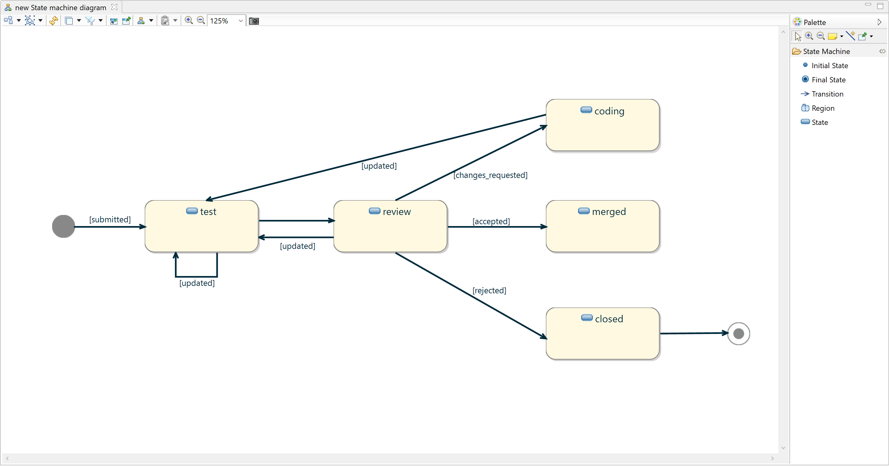
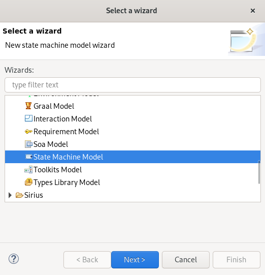
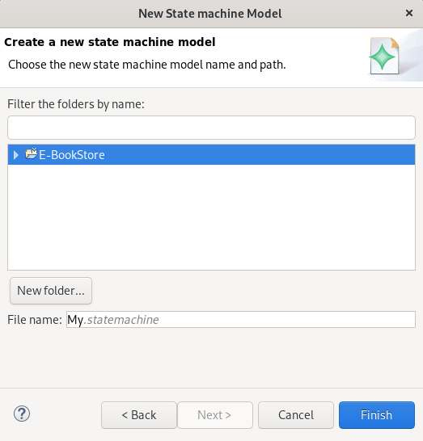
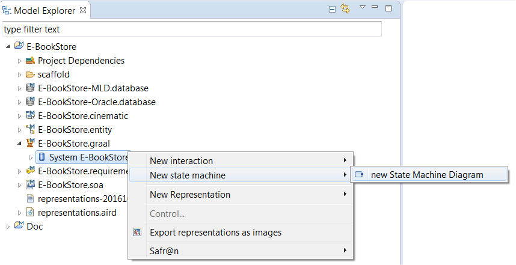
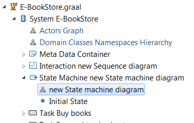
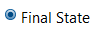
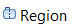

Copyright © 2008, 2023 Obeo - All rights reserved. This program and the accompanying materials are made available under the terms of the Eclipse Public License v1.0
Les diagrammes StateMachine permettent de définir des machines à état sur quasiment la totalité des éléments définis dans Information System, à l’exception notable du métamodèle Database.
Les diagrammes de machines à états manipulent des concepts très proches des diagrammes StateMachine définis par UML.

Un assistant de création de modèles de machine à états est accessible via le menu :
File > New > Other ... > State Machine Model (Catégorie IS Designer)

Cet assistant permet de définir

Une fois l’assistant validé, le modèle est créé.
Pour pouvoir créer un diagramme de machine à état il faut activer le point de vue State Machine sur le projet via le menu contextuel Viewpoints Selection sur le projet ou sur le fichier aird.
Une fois le point de vue activé, une entrée New state machine est ajoutée au menu contextuel des éléments pour lesquels un diagramme de machine à états peut être créé.

Un object
State Machine et un diagramme de machine à états sont alors créés et visibles sous l’objet sélectionné.
Il est possible de créer autant de diagrammes de machines à états que voulu pour un même objet.

Les éléments suivants sont affichés sur le diagramme :
Les outils fournis par la palette sont :
|
|
Création d’un état initial. |
|  | Création d’un état final. |
|
|
Création d’une transition entre deux états. |
|  | Création d’une région. |
|
|
Création d’un état. |